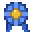
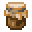
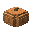
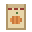
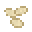

Fairs & festivalsThe Harvest Fair
Once a year Judge Bramblewick, an old badger in tweed, comes to every show bench.

Last day of autumn: judging at noon.
The show bench
Set a show bench up on your farm and open it to set out your entries.
Fences near the bench get bunting on fair morning.
The classes
On the bench: mead, honey, preserves, eggs, a fruit basket, and the heaviest vegetable.

Cloudberry Jam
Giant PumpkinEach is marked out of a hundred against the villagers' best. Hover a class to see what wins.
In the ring
Tie your best cow, pig and bird to a fence near the bench. Fattening, size and breeding count.
A brushed animal shows better.
Prizes
Rosettes for first, second and third; a silver cup for the best of all. Each prize earns fair points.
The villagers try harder every time you win.
The prize table
Spend fair points at the prize table: from the bench, or ask the judge.

Heirloom Seed PacketShow Brush
Atlantic Giant Pumpkin SeedsBunting, rare seeds, a show brush, giant pumpkin seeds, a fairy lantern, Buckfast bees.
Atlantic Giants
A giant pumpkin grows all summer on rich, wet farmland, and drinks the soil dry.
Keep it composted and watered. Break it to weigh it.
Bunting
Hang it above a fence line or across a lane, and every day's a fair day.
It strings itself the way you're facing.
Midsummer Eve
The middle day of summer. Build a bonfire: at dusk it lights itself, and the village dances round it till dawn.
Leap the flames on Midsummer Eve for a year's luck.
Flower crowns
Five flowers woven into a crown, worn on the head. Petals drift about whoever wears one.
Any small flowers will do.
Secret All Hallows Eve (click to reveal)
Four nights before the fair. Will-o'-the-wisps drift in the dark: follow one and it leads you to a gift.
Carve a turnip and set a candle in it.
Secret Guising (click to reveal)
The children come calling. Give them a treat and they'll give you something back. Keep them waiting...
Toffee apples, cookies, pie or honey.